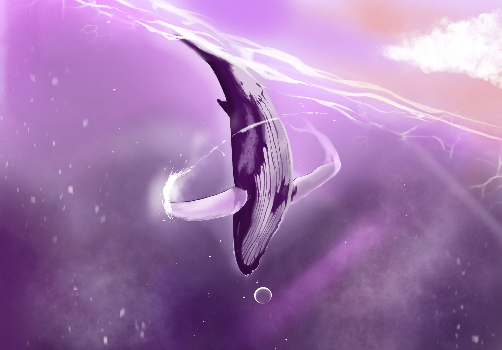
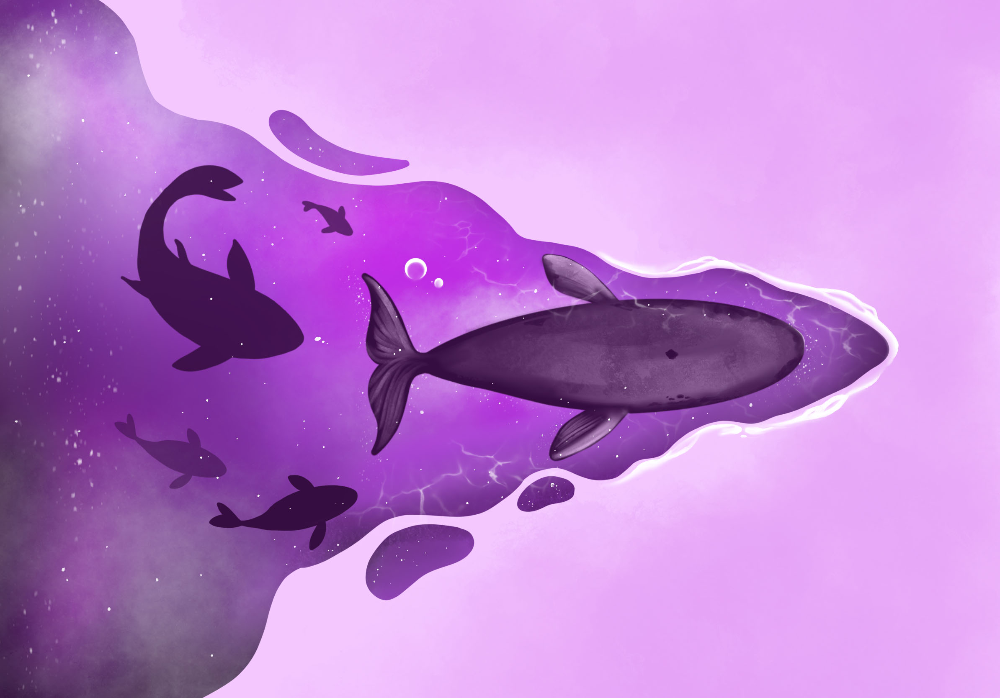
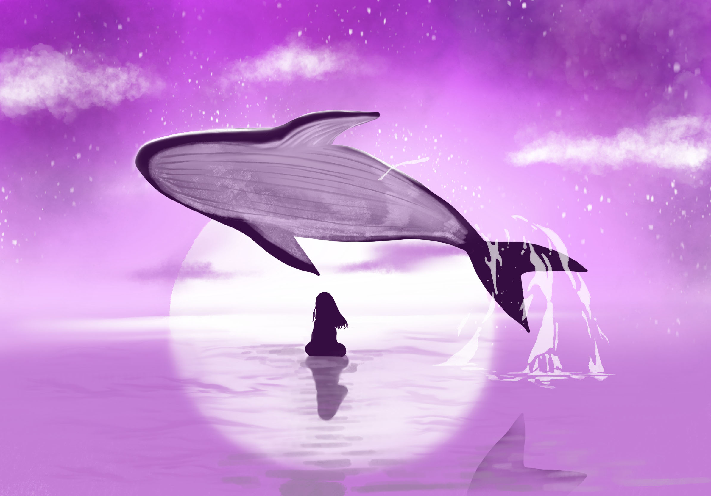
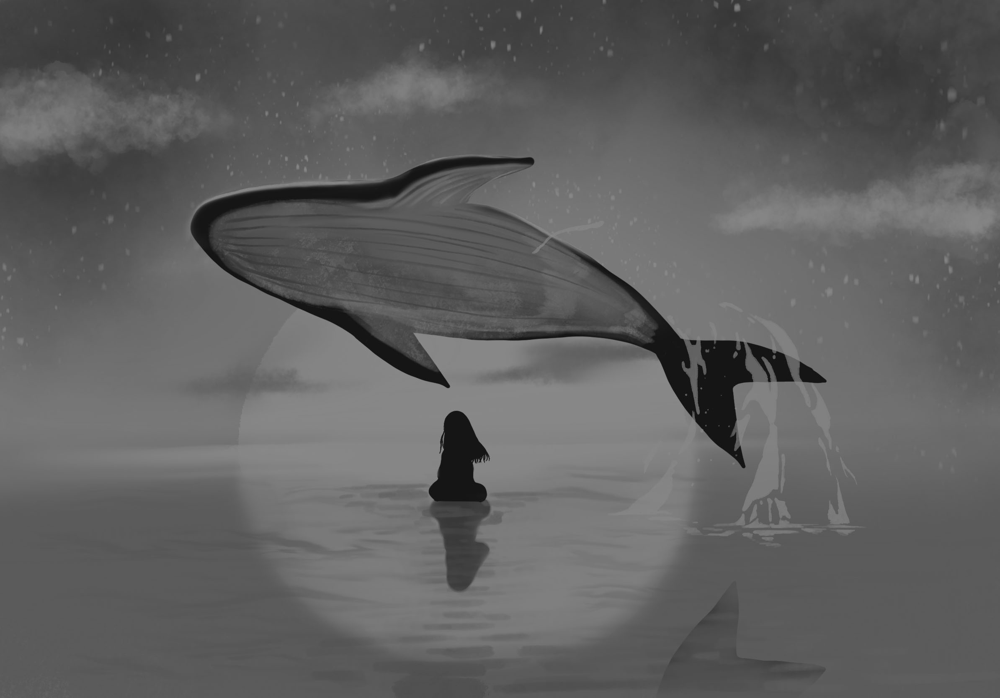
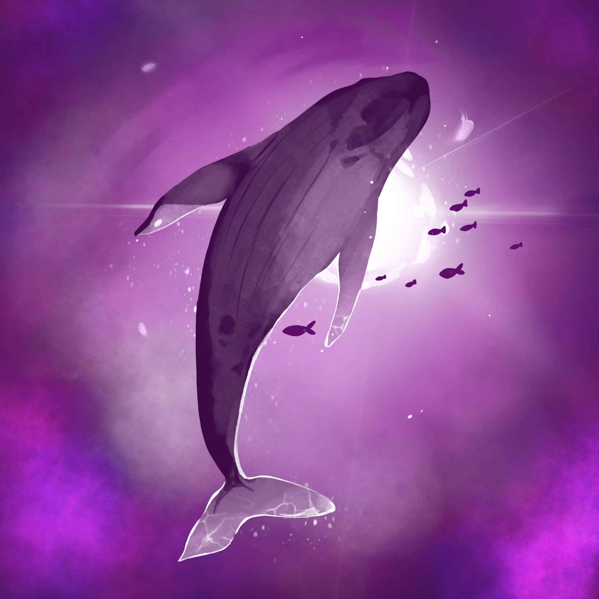
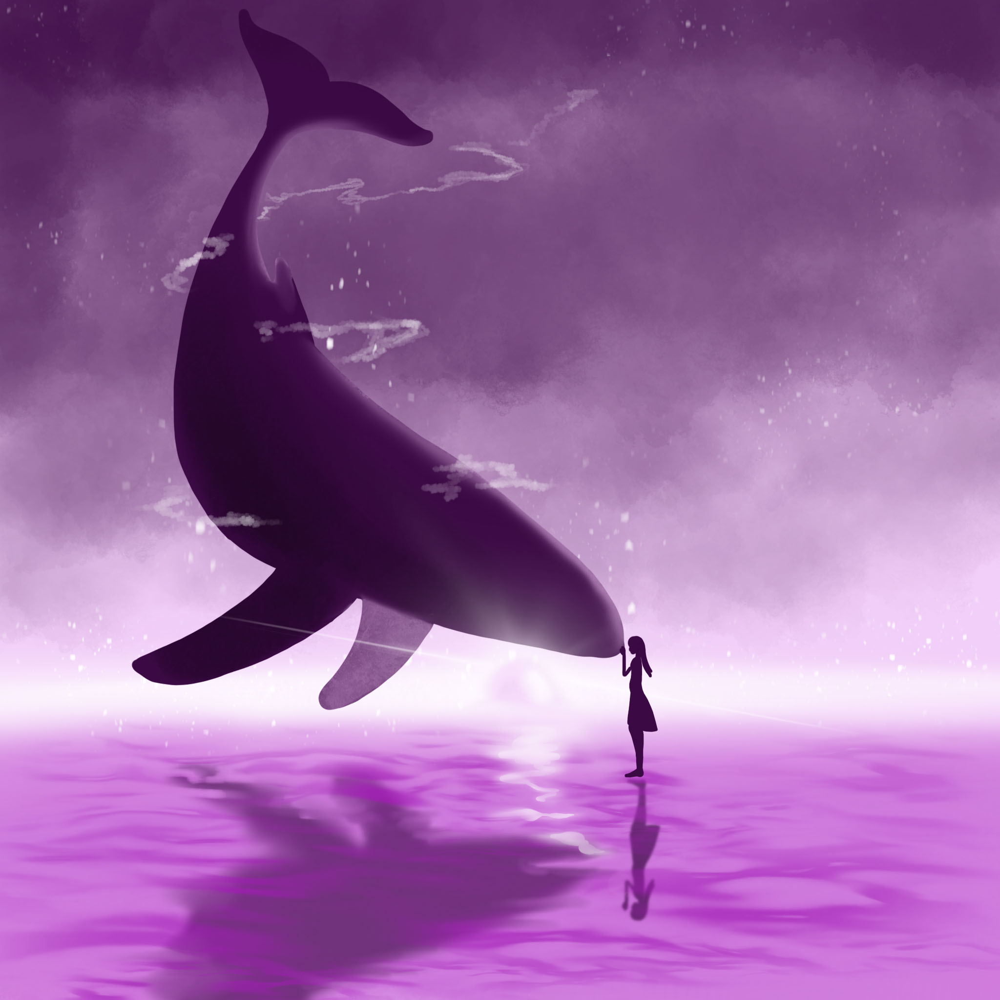
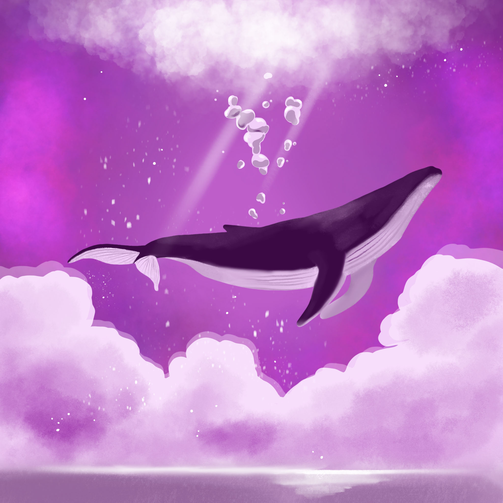
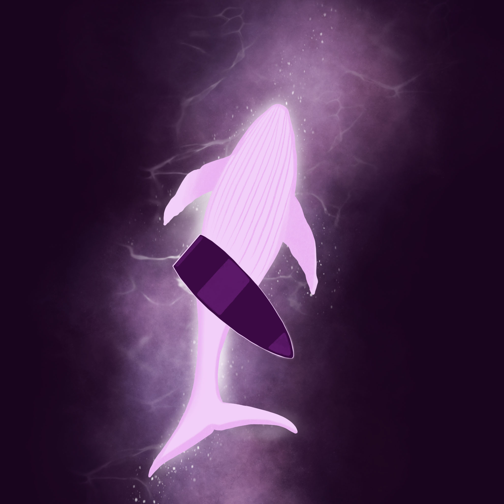
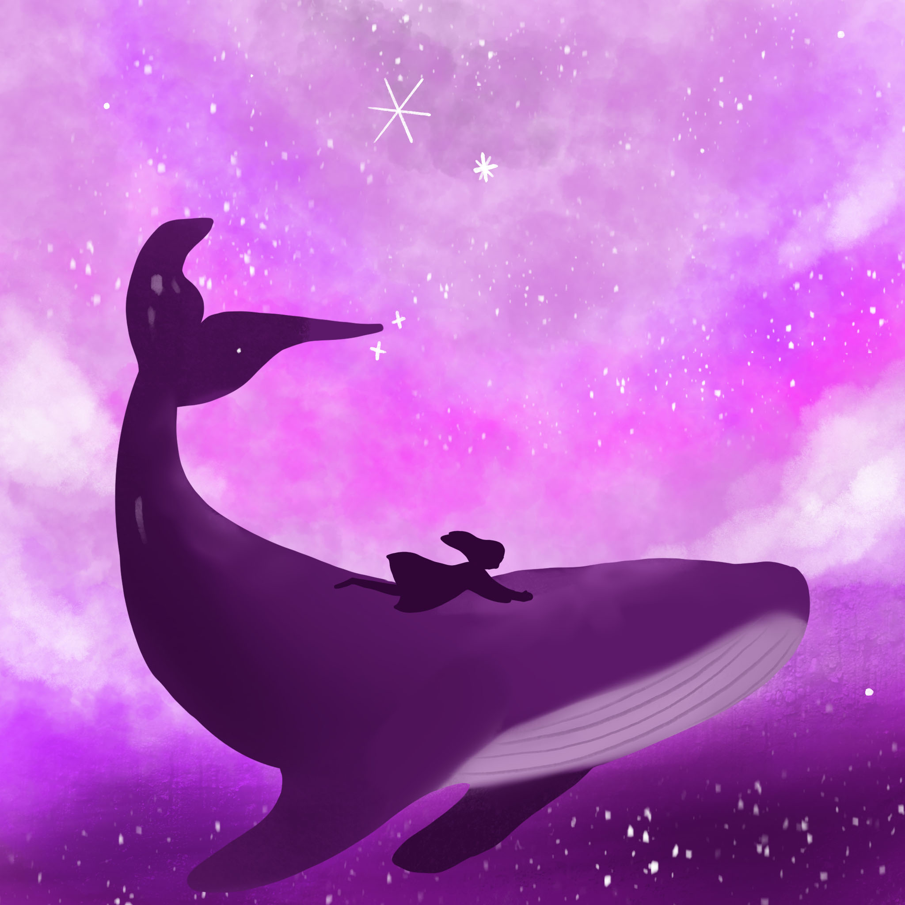

고래
AKMU
START

고래야 적어도 바다는 네가 가졌으면 좋겠어

고래야 헤엄하던 대로 계속 헤엄했으면 좋겠어

부러워 난 고래야 네가 아마도 다들 그럴 거야 아마도 다들 그래서

바다를 빼앗으려는지 몰라

오, 거대한 너의 그림자를 동경해
이 넓은 바다를 누비는 너의 여유

고래야 적어도 바다는 네가 가졌으면 좋겠어

고래야 마른하늘 위로 물을 뿌려줬으면 좋겠어
두려워 마 굉음 소리가 아무리 크다 한들 해도 천둥에 미치지는 못하니까

오, 거대한 너의 그림자를 동경해 이 넓은 바다를 누비는 너의 여유
하늘의 거울 바다, 땅의 세숫대야 바다
이슬의 고향 바다, 고래의 집 바다
기억의 저편 바다, 어머니의 눈물 바다
지구의 호흡 바다, 고래의 심장

오, 거대한 너의 그림자를 동경해 이 넓은 바다를 누비는 너의 여유